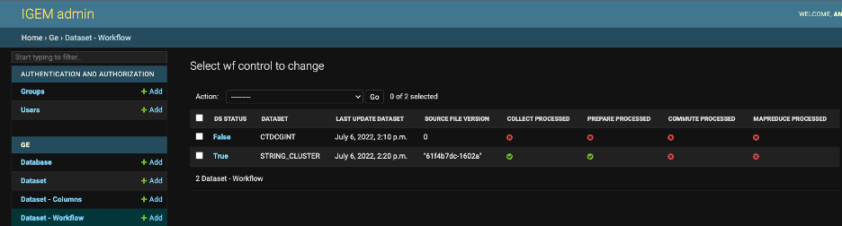
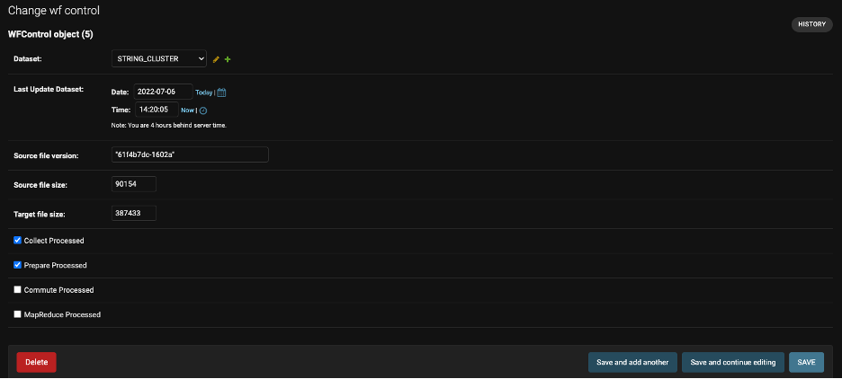

Workflow¶
In addition to the reset commands shown above to control the process workflow, the system also has a web interface where the user can consult and manage the flow and status of the phases.
Browse http://127.0.0.1:8000/admin/ge/wfcontrol/ or select the Dataset – Workflow option in the GE application In the first one, DATASETs that have already been started will be started, with the following references:
DS STATUS: informs whether the DATASET is active or not for processing the 4 phases
DATASET: Abbreviation for DATASET
Last Update Dataset: Date of the previous data update.
Source file version: Version of the final processed file.
The following four columns display the statuses still of the processes by phase. The green symbol indicates the status-completed successfully and the group not processed.
Data were only available in the GE.be database after all phases had been successfully executed.
When selecting a DATASET, it will be a details screen allowing the specific opening by field.
Important: it will not be necessary to include new DATASETs in the Workflow monitor. The system will automatically create a new control after the first load of data from the DATASET. If one of the workflow records is deleted, it will also be completed after the next data load.